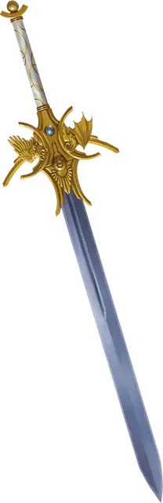

Меч Плановых Измерений
Sword of the Planes
Оружие (любой меч), легендарное (требуется настройка)

Рекомендованная стоимость от 50 001 зм
Вы получаете бонус +3 к броскам атаки и урона, совершённым этим магическим оружием.
Этот меч может разорвать ткань реальности, создав временный разрыв между планами. Вы можете действием выбрать другой план существования, отличный от того, на котором вы находитесь, и прорезать незанятое пространство в пределах 5 футов от себя, создавая разлом в этот другой план. Разлом может достигать 10 футов в высоту и 10 футов в ширину и длится 1 минуту. После того, как это свойство будет использовано, его нельзя будет использовать снова до следующего рассвета.
Вы можете указать целевой пункт назначения, например, Латунный Город на Стихийном Плане Огня или дворец Диспатера на втором уровне Девяти Преисподних, и разлом откроется в этом пункте назначения или рядом с ним (на усмотрение Мастера). Например, если вы пытаетесь добраться до Латунного Города, разлом может появиться на Улице Стали, перед Вратами Пепла или напротив города со стороны Огненного Моря, по усмотрению Мастера.
Все, что попадает в разлом, мгновенно переносится на другой план, оказываясь в незанятом пространстве, ближайшем к разлому.